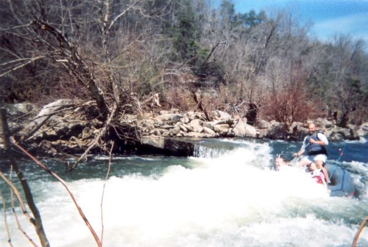

|
Optional Big Slide at the Upper Town Put-in, picture taken 12-8-01. This gets
mighty sticky looking at higher water, and is most likely and unwise run - see the next 3 pictures.
(Brian McAnally photo courtesy Josh Tidwell) |
|
About 1995 Tony Baker ran the old mill slide at about 900 cfs.
His narration: "That was the fastest thing I've ever been on..."
(photo courtesy Tony Baker) |
|
"... I had to change my line right at the bottom to square up perpendicular
to the edge of the hole , It was getting shallow and I couldn't get much purchase with my paddle ..."
(photo courtesy Tony Baker) |
 |
"...Even at that it blew me back on the stern deck when I went through it .
Haven't tried it a second time, the hole is just too ugly and obviously a keeper. Being older and wiser , I would
not run it again myself , regardless of levels. I have since heard that there is some rebar in the rock . It would
be a bad scene to hit some going that speed."
(photo courtesy Tony Baker) |
|
Josh Tidwell in the second drop of the run at 350 cfs
(photo courtesy Josh Tidwell) |
|  |
A raft in the 2nd drop. Do I see a fishing pole? Do I see helmets?
(photo courtesy Josh Tidwell) |